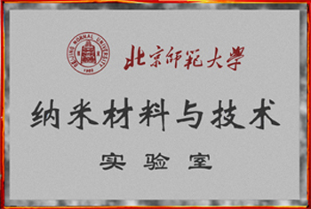

欢迎来到北京师范大学纳米材料与技术实验室
实验室简介
纳米材料与技术实验室是北京师范大学校级重点实验室，是射线束技术与材料改性教育部重点实验室和北京师范大学核科学与技术学院的组成部分之一。本实验室的主要研究方向为：功能纳米薄膜材料、一维纳米材料的制备及其光电性能、纳米颗粒与纳米结构的自组装、基于纳米材料的纳米器件（包括纳米探测器和纳米传感器）、材料表面改性和材料辐照效应等。 纳米材料由于材料维度和尺寸的减小，其物理化学性能和力学性能显著不同于宏观块体材料，使其在纳米电子器件、光电探测器、力学和生物传感器、微波器件和太阳能电池等领域具有潜在的应用前景。本实验室利用纳米材料的量子效应和尺寸效应研究纳米材料电子传输和电子激发效率、传感器响应灵敏度和光吸收等性能提高的途径，并开展异质纳米结构合成和电子在纳米结构材料中的传输过程等方面的基础研究。例如用于电子枪和平板显示器的高性能纳米结构场发射材料研究、用于光电探测器的纳米光电响应材料研究和用于化工领域的催化材料研究等，同时利用纳米技术开发新型纳米器件。本实验室的研究是涉及材料科学、物理学、化学和电子工程等学科的交叉领域。
本实验室在凝聚态物理专业招收博士后、博士和硕士研究生，在材料物理与化学专业招收硕士研究生。
